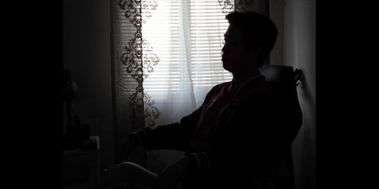
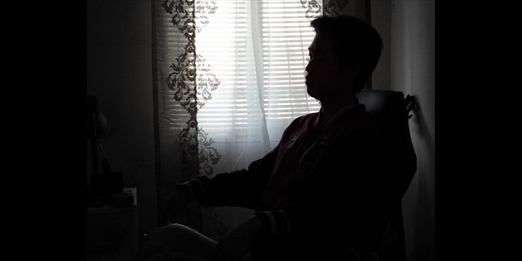

ME.exe
-1.7x higher risk of breast cancer
-increased type-2 diabetes risk; insulin resistance
-age-related tasting variation (bitter dullness over time)
-3x risk of schizophrenia
-1.5x higher risk for coronary artery disease
-2 - 3x higher prostate cancer risk if routinely exposed to the pesticide fonofos
-2x increased risk of Melanoma
-somewhat more insensitive to pain
-carrier of a recessive deafness mutation
-1.42x risk of Autism
-moderately enhanced hippocampal volume
-methylenetetrahydrofolate reductase (MTHFR) enzyme gene for homocysteine recycling abnormal
-lower heart attack risk than average (0.46x)
-lose 2.5x as much weight on a low fat diet
-not to maintain weight loss unless you perform high energy exercise
-lactose intolerance risk; likely to be lactose intolerant as an adult
-increased risk of myopia
-increased risk of baldness
-Optimistic and empathetic; handle stress well (more empathetic, feel less lonely, employ more sensitive parenting techniques, and have lower rates of autism[better able -to discern the emotional state of others])
-slightly higher risk of ischemic stroke (silent/brain stroke)
-Dry earwax. No body odour. Likely Asian ancestry.
-1.94x risk of developing rheumatoid arthritis
-1.16x increased risk of Osteoarthritis
-2.5x increased risk for narcolepsy
-0.80x reduced risk for glioblastoma (brain tumor) as well a 84% in CAD risk
-Increased longevity. Less mental decline with age.
-Increased chance of Prion Disease (infectious brain disease)
-0.65x efficiency in processing folic acid
-Reduced 0.34x risk of Age Related Macular Degeneration (eye degradation with age)
-reduced risk (0.84x) for late-onset (adult) asthma
-Better performing muscles. Likely sprinter. (Fast-twitch muscle fibers)
-Stronger memory performance; greatly increased memory performance
-Tend not to be a heavy smoker
-Increased monoamine oxidase A activity (monoamine oxidase A is involved in the breakdown of the neurotransmitters serotonin, epinephrine, norepinephrine, and dopamine. -Signals transmitted by serotonin regulate mood, emotion, sleep, and appetite. Epinephrine and norepinephrine control the body's response to stress. Dopamine transmits -signals within the brain to produce smooth physical movements.)
-Normal lower risk of Multiple Sclerosis.
-Likely slightly taller - carrier of two alleles for increased height
-Larger stomach volume, does not get full as easily as T allele carriers
-highest odds of photic sneeze reflex (sneeze in response to bright light)
-decreased cancer risk
According to Your Nature
Do people and events distract you? Stop being whirled around by things outside yourself.
Meanwhile, avoid the opposite trap of being absorbed in the minutia of daily life. Don't weary yourself in endless activity with nothing of real accomplishment to show for it.
Don't worry about what others think. Mind what you think. Watch the movements of your mind, and focus your thoughts on something worthy.
Ask yourself the important questions: What is the nature of the cosmos? What is my nature? How is this related to that? What part do I play in the whole?
No one can stop you from living according to your nature—from thinking, saying, and doing things that benefit all.
Modern Translation:
Do you find it difficult to focus? It is because you are concerned with things beyond yourself. (Other people/events/priorities)
However also, avoid losing yourself to your daily grind and letting your days flyby meaninglessly. Don't wear yourself down without even noticing it.
Ignore most of what others may be thinking, especially about you. Think about what YOU think. What is on your mind, is it about something worthy of your thought?
Ask yourself: What is your purpose in this universe? What do you have that can achieve your life's purpose? What actions can you take right now to benefit the whole?
With your strengths and plan in mind, no one or thing can stop you. Your thoughts, words, and actions are now aligned with the universal way.
Life's Purpose
-A united egalitarian mankind
-Nature/strength: Wealth/hunger for knowledge and Meditations
-Action: Connect with others to build "power" and read/learn to gain wisdom to wield said power
-Concentrate on: Developing the science to change the universe and unite countries
- Focus: Artificial Intelligence, Quantum/Macro Physics, Being a Gentleman
Writing Prompts
1. Make a map of your failures indicating the rough date they occurred. Write beside each one what you learned.
-Academics (2012-2013) Dropping out of college. I was immature in a sense that I blamed my failures on everything else besides my own lack of effort and character. I was also addicted to pleasure and the negative feedback loops of self-indulgence and easy rewards.
I learned that I had no discipline and that excuses were not the answer. I didn't fully realize it at the time but over time I learned the hard way how to be more disciplined. I am grateful I made lifelong friends during this time and learned how to live by myself.
-Depression (2015) Doing absolutely nothing and just existing and living with dark thoughts and having no goals or anyone to turn to was what I faced during this time. I was in terrible terms with my family and recluse to my friends. Lying in bed wanting to end it all.
I learned that I never want to be in that state of living ever again and will do anything to avoid it. What got me out of the hole was that I simply decided one day that I was going to find a job and improve my life. I drove to Starbucks everyday to use their internet and applied for dozens of jobs. Shit sucked and I ended up with a dead-end job.
-Weak (2016?) After hiking in Andrew's farewell hike to Inspiration Point and having failed to reach the top, I realized how my lifestyle was completely self-destructive and unsustainable. I felt like a hamster on a wheel. Work a dead-end minimum wage job to come home dead tired. I played videogames on my free time all day and return to nightshift. Surviving off of mass gainer. Utter shit. Also my dog disappeared. That was so painful.
I learned how to exercise my mind and body to become something more. I forget how but I stumbled upon a youtube channel called Improvement Pill and learned a lot about self-improvement. One especially life changing video was the recommendation on reading "Tools of Titans" by Tim Ferriss. This book gave my insight on the lives of world class performers and taught me a lot about their habits, routines, and mindset that branched out to a plethora of topics that I explored to improve myself or at least try to be my best. I got fit, went back to school, learned so much about the world and myself, stemming from this singular channel.
-COVID-19 (2020) A dark year. Everything paused and the world I lived in paused. No more school, no more friends/family, no more outside world. A creeping darkness returns.
I learned to appreciate everything I took for granted; nature, people, money, sunshine, society, health. It gave me a new perspective on how much worse life could be and had become in an instant. I had to pull myself out of the hole once more but this time, many other people were in holes all around me. Enter the Navy...
-Love (Corry) (2022) I had my first e-girlfriend at Corry Station after joining the Navy. It was a brief love but damn did I feel invincible as if the world/universe simply worked out. Rachel was beautiful and brilliant bit it simply died off. I'm not sure 100% why but I believe it may be my inexperience in romantic endeavors. I also experienced a familial bond with my CTM A-school family. We're all out of touch with each other now but I love you all and I hope you are well, Byrd, Chav, Oki, Mcvay, Anderson, Tomas, Prinzi, Womack, Amaya. <3
I learned the value of love and relationships; how fleeting and difficult it is to develop and maintain; why it is important and to be/try to be more sociable.